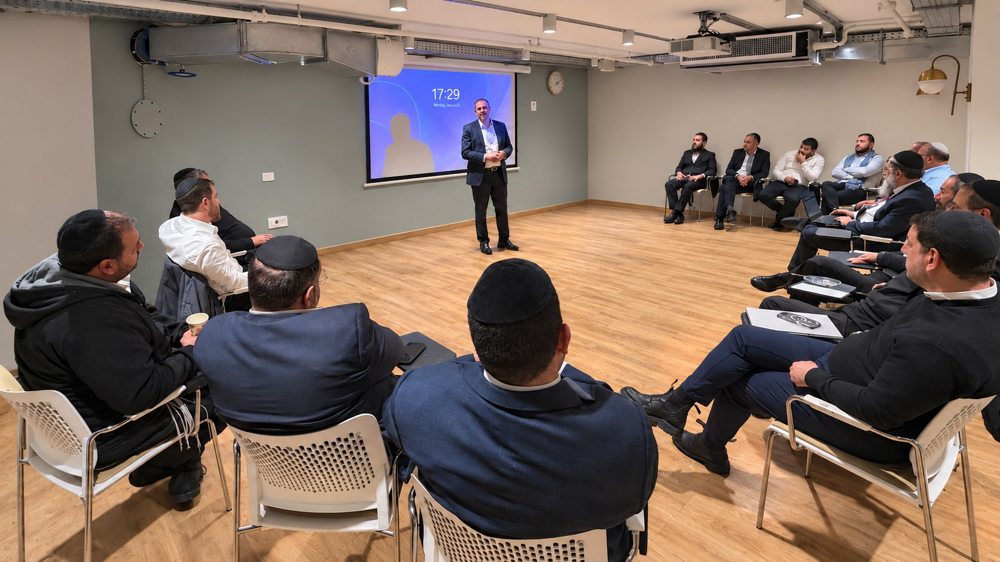
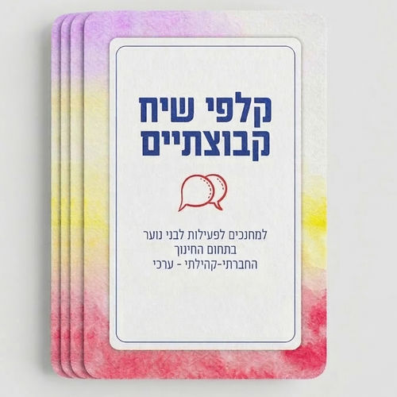
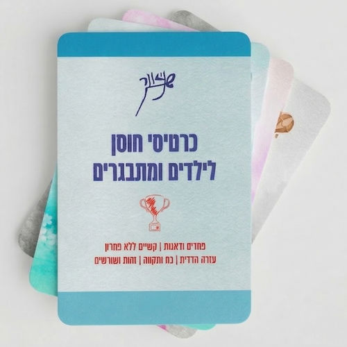

ייעוץ ארגוני למוסדות חינוך
אבחון ארגוני, חזון ויעדים, תוכנית עבודה ומבנה ארגוני שמאפשר לצוות לעבוד בתיאום ולהתמקד במה שחשוב.
ליווי הנהלות, מנהלים וצוותים במוסדות חינוך ובארגונים בציבור החרדי – עם כלים מעולם הייעוץ והמדיניות, ובשפה של הקהילה.
„מוסד שמגלה בעיה ומטפל בה בשקיפות ובאחריות הוא מוסד שניתן לסמוך עליו.”
כל תהליך נבנה סביב האתגר האמיתי של המוסד – לא סביב תבנית מוכנה מראש.
אבחון ארגוני, חזון ויעדים, תוכנית עבודה ומבנה ארגוני שמאפשר לצוות לעבוד בתיאום ולהתמקד במה שחשוב.
ליווי אישי למנהלים, רכזים ובעלי תפקידים: קבלת החלטות, ניהול צוות, משברים והובלת שינוי מתוך יציבות.
השתלמויות ותהליכי למידה לצוותי הוראה וחינוך – מוטיבציה, תקשורת בצוות ושפה חינוכית משותפת.
תוכניות חינוך חברתי, אקלים מוסדי ושייכות של תלמידים, הורים וצוות – בשפה ובערכים של הקהילה.
תכנון אסטרטגי ותוכניות רב-שנתיות לעמותות, ארגונים ומחלקות חינוך, מתוך ניסיון בעבודה מול גופים ציבוריים.
הרצאות לצוותים, להנהלות ולהורים בנושאי חינוך, הורות וניהול חינוכי – כמפגש בודד או כחלק מתהליך.

מוסד חינוכי בציבור החרדי פועל בתוך מערכת ייחודית של ערכים, הנהגה רוחנית, הורים וקהילה. ייעוץ שלא מכיר את כל אלה מתקשה להחזיק בשטח – ולכן הליווי נבנה בשפה, בקצב ובערכים של המוסד.
תהליך מסודר עם יעדים ברורים, שנשאר בארגון גם אחרי שהליווי מסתיים.
שיחות עם ההנהלה והצוות, מיפוי החוזקות והאתגרים, והגדרה משותפת של מה רוצים לשנות.
תוכנית עבודה ממוקדת: יעדים, אחריות, לוחות זמנים ומדדים שאפשר לעקוב אחריהם.
מפגשי ליווי קבועים, הנחיית תהליכים, השתלמויות ופתרון בעיות בזמן אמת.
בדיקת התוצאות מול היעדים והעברת הכלים לידי הצוות, כדי שהשינוי יימשך.

יועץ ארגוני וחינוכי, חוקר ומרצה, שפועל שנים בחיבור שבין מערכות חינוך, מדיניות ציבורית והחברה החרדית.
בוגר ישיבות חב"ד ומכון מנדל למנהיגות. ממונה על החינוך החברתי-ערכי במחוז החרדי במשרד החינוך, ומלווה מוסדות, מנהלים וצוותים בבניית תוכניות חינוכיות ובהובלת שינוי.
מרצה לתואר שני במדיניות ציבורית באוניברסיטת חיפה וכן במכללות אורנים, שאנן והרצוג. חוקר המתמחה בחינוך בלתי-פורמלי בציבור החרדי ובמוטיבציה של מורות חרדיות.
בואו נדברהגשר לעולמם של ילדים ומתבגרים. כלי מקצועי, ערכי ומהנה שמאפשר שיח פתוח וכנה
כמי שמוביל את תחום החינוך החברתי-ערכי בציבור החרדי, הקמתי את "שיח" מתוך שליחות והבנה שהחיבור בין בני משפחה, חברים וקהילה הוא הבסיס לחוסן הנפשי והרוחני שלנו.
כל סט קלפים נבנה מתוך מחשבה מעמיקה על השפה, הערכים והוויזואליה שמתאימים בדיוק לציבור שלנו.



יועץ ארגוני עוזר להנהלה לראות את התמונה המלאה של המוסד: איך מתקבלות החלטות, איך הצוות עובד יחד, איפה נתקעים ומה צריך כדי להתקדם. יחד בונים תוכנית עבודה ומלווים את היישום שלה בשטח.
כן, זה לב העבודה. שניאור, בוגר ישיבות חב"ד, עובד שנים עם מוסדות ומסגרות בציבור החרדי, ולכן הליווי נבנה בשפה, בקצב ובערכים של המוסד ובתיאום עם ההנהגה שלו.
מנהלים ומנהלות של מוסדות חינוך, הנהלות של עמותות וארגונים, רכזים ובעלי תפקידים, וגם מחלקות חינוך ברשויות שעובדות מול הציבור החרדי.
בשיחת היכרות ללא התחייבות. בשיחה מבינים מה האתגר, מה כבר נוסה ומה המטרה, ועל בסיס זה מציעים מסגרת ליווי שמתאימה למוסד.
בהחלט. אפשר להזמין הרצאה או סדנה בודדת לצוות, להנהלה או להורים, ואפשר לשלב אותה כחלק מתהליך ליווי רחב יותר.
ספרו בכמה מילים על המוסד ועל מה שמעסיק אתכם, ונחזור אליכם לתיאום שיחת היכרות.